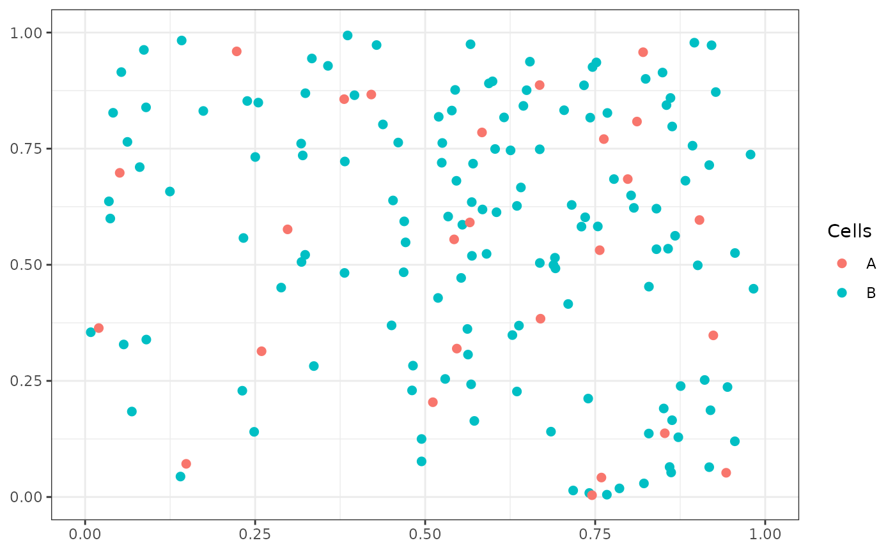

This vignettes walks through the approach funkycells
takes to modeling data. The package funkycells is best
employed when considering spatial data. While this data is typically
collected, below such data is created.
set.seed(123)
cell_data <- simulatePP(
cellVarData =
data.frame(
"stage" = c(0, 1),
"A" = c(0, 0),
"B" = c(1 / 100, 1 / 300)
),
cellKappaData =
data.frame(
"cell" = c("A", "B"),
"clusterCell" = c(NA, "A"),
"kappa" = c(20, 5)
),
peoplePerStage = 15,
imagesPerPerson = 2,
silent = FALSE
)
#> Stage: 0 (1/2)
#> Stage: 1 (2/2)The created data has two outcomes (\(0\) and \(1\)), and two cells (\(A\) and \(B\)). The cells are constructed such that \(A\) is completely spatial random and \(B\) clusters around \(A\). Moreover, \(B\) has increased clustering in stage \(1\) when compared to stage \(0\). The data has \(15\) patients in each stage, with \(2\) images per patient. An example image for each stage is given below.
plotPP(cell_data[cell_data$Image==1,c('x','y','cellType')],
ptSize = 2, colorGuide = ggplot2::guide_legend(title="Cells"),
xlim = c(0, 1), ylim=c(0,1))
plotPP(cell_data[cell_data$Image==61,c('x','y','cellType')],
ptSize = 2, colorGuide = ggplot2::guide_legend(title="Cells"),
xlim = c(0, 1), ylim=c(0,1))
The next step is to summarize the functions. This is done through \(2\)-way interactions using \(K\) functions. With only two cells, there are four possible interactions (\(A\)-\(A\),\(A\)-\(B\), \(B\)-\(A\), and \(B\)-\(B\)). Often reverse interactions (i.e. \(A\)-\(B\) and \(B\)-\(A\)) are highly related and so consideration of only one is encouraged to remove variables in the model and improve power. An example of the \(K\) functions is given below.
AB_ex <- getKFunction(cell_data[cell_data$Image==1,
!(colnames(cell_data)%in%('Stage'))],
agents = c("A","B"),unit = "Person",repeatedUniqueId = "Image",
rCheckVals = seq(0,0.25,0.01),xRange = c(0,1),yRange = c(0,1))
ggplot2::ggplot() +
ggplot2::geom_line(ggplot2::aes(x = r, y = K1), data = AB_ex, linewidth = 2) +
ggplot2::theme_bw() +
ggplot2::theme(
axis.title = ggplot2::element_blank(),
axis.text = ggplot2::element_blank()
)These functions must then be projected into finite dimensions. Since
\(K\) functions are so commonly used,
funkycells has a specialized function for computing and
projecting the \(K\) functions through
the popular functional principle components analysis. The following code
projects the funtions into \(3\)
principle components each.
pcaData <- getKsPCAData(
data = cell_data, repeatedUniqueId = "Image",
agents_df = data.frame(c('A','A','B'),c('A','B','B')),
xRange = c(0, 1), yRange = c(0, 1),
nPCs = 3, silent = F
)
#> PCA Pairs (3): 1, 2, 3Often data is also collected with some meta-variables, such as with patient age or sex Both age and sex are simulated below. In the simulation, higher age is related to stage \(1\) while sex has no effect.
set.seed(123)
pcaMeta <- simulateMeta(pcaData,
metaInfo = data.frame(
"var" = c("sex","age"),
"rdist" = c("rbinom","rnorm"),
"Stage_0" = c("0.5","25"),
"Stage_1" = c("0.5","26")
)
)This data is fed into funkyModel() which adds synthetics
and examines the variables efficacy in predicting the outcome.
set.seed(123)
model_fm <- funkyModel(
data = pcaMeta,
outcome = "Stage",
unit = "Person",
metaNames = c("sex", "age")
)The model returns, in addition to other details, a variable importance plot. This plot can be used to compare efficacy of each variable in comparison to each other and random noise.
model_fm$viPlot